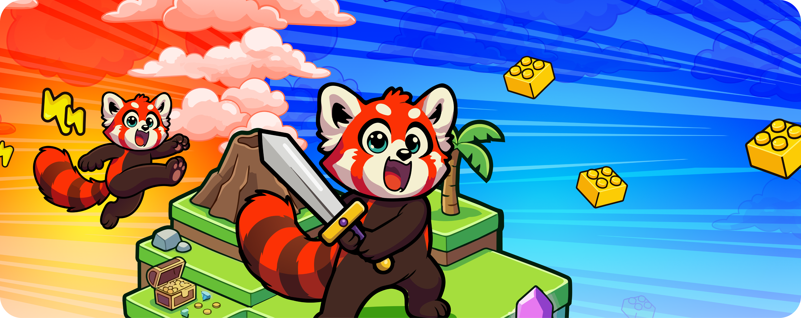
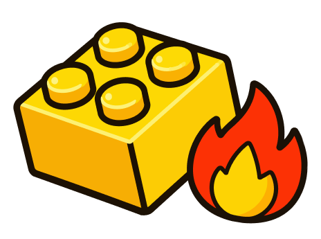
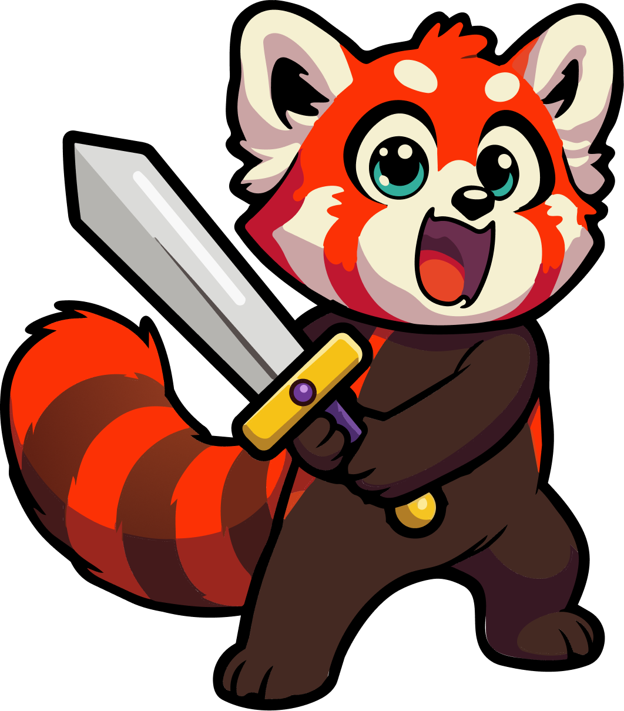

Explora cómo construir y lleva tus MOCs al siguiente nivel. Aprende a pensar con bloques y crea como construyen los más capaces.
Comenzar ahora →Explora ideas, retos y piezas creadas para inspirar.

Domina técnicas reales para que tus creaciones sean firmes y originales.
Explorar¿Alguna vez pensaste "qué más se puede hacer con esto"? Nuestra app convierte tus piezas en retos y aprendizaje.


Crea tu cuenta gratis y desbloquea retos, islas y tu propio laboratorio.
Crear mi cuenta gratis


"Por fin entendí cómo hacer uniones en ángulo sin que se desarme todo. Los videos explican súper claro la lógica detrás de cada pieza."
"Dejé de comprar sets solo por seguir el manual, ahora armo mis propios vehículos y mecanismos con las piezas que ya tenía."
"Los retos rápidos me ayudaron a usar piezas que tenía guardadas hace años y a perderle el miedo a probar conexiones nuevas."
"La mejor comunidad en español para aprender técnicas reales de construcción sin depender de instrucciones paso a paso."
"Amo este canal y mi momento favorito fue el de llegar a los 100k. Cada video inspira demasiado para ponerse a construir."
"Tremendo canal, gracias a sus ilusiones ópticas y trucos de SNOT mejoré muchísimo el acabado de mis maquetas."